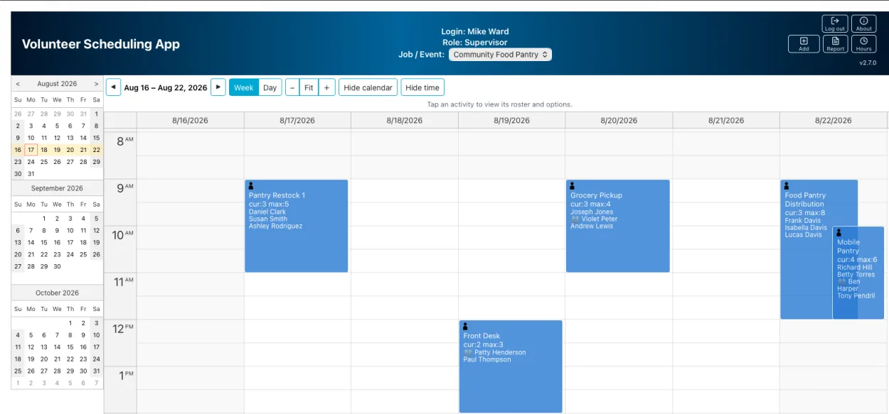
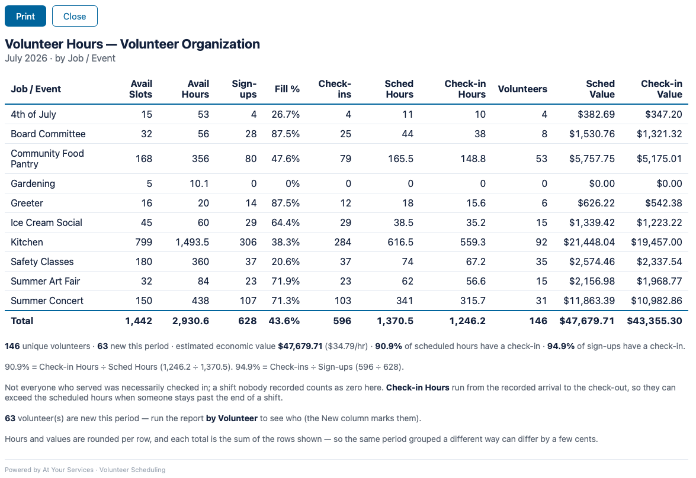

Volunteer Scheduling Application
Product Description
Stop chasing volunteers and managing signups. Give your community a simple, self-service schedule they'll actually use — people claim and cancel their own spots, and the schedule keeps itself organized.
Overview
If you coordinate volunteers or staff, you know the drain: the back-and-forth email to fill a shift, the spreadsheet only one person can edit, too many people showing up for one task and nobody for another, and a printed roster that gets lost or re-typed. The Volunteer Scheduling Application (VSA) takes that off your plate. It's a web-based schedule where people sign themselves in and out of activities on a shared calendar — from a phone if they like — while VSA quietly prevents over-scheduling and shows each person exactly what their role should see. Volunteers manage only their own people, supervisors see the complete roster, and administrators keep control.
Who it's for
- Churches & ministries — greeters, worship team, nursery, ushers.
- Food banks & nonprofits — recurring shifts and event slots.
- Schools & PTAs — parent volunteers for events and classroom help.
- Sports clubs & teams — coaches, snack duty, field setup.
- Community & one-time events — coordinating numerous volunteers across single or multiple days.
VSA is not limited to these organizations — it is a flexible application that can accommodate many types of organizations with scheduling needs.
Features at a glance
- Self-service scheduling — volunteers sign themselves up and cancel, from any phone; one account can cover a family or a whole group (a parent can sign up their kids, or a group leader their whole crew).
- Capacity limits & live status — per-activity maximums, current counts, and color-coded availability so full slots and gaps are obvious at a glance.
- Role-based privacy — Volunteer, Supervisor, and Administrator roles; volunteers see only their own signups, and private Jobs/Events stay hidden from unassigned accounts (enforced on the server).
- Delegation, not a lone administrator — add as many Supervisors as you need; each creates and manages their own Jobs/Events and controls who may access them, instead of everything routing through a single admin account.
- Exception handling — lock a fully-staffed occurrence, or cancel and restore a single date, without disturbing the recurring plan behind it.
- Call off a shift people already signed up for — an Administrator can cancel an occurrence that already has volunteers on it, giving a reason that goes out by email to every one of them automatically. The screen then names anyone whose email could not be sent or who has no address on file, so you know exactly who still needs a phone call. Restoring it tells them too.
- Change who is on a shift — take a volunteer off a shift that has not started (they are emailed, and you are told if the message did not reach them), or add someone who turns up on the day without having signed up — added and checked in in one act, even if the shift was already full. Neither is a cancellation: the shift still goes ahead.
- Flexible recurrence & events — daily, weekday, day-of-week, or monthly schedules with open-ended or fixed end dates; dated multi-day events that can automatically reappear next season.
- Volunteer check-in (verified attendance) — capture who actually shows up: a front-desk check-in station where volunteers sign themselves in by name on a shared tablet, self check-in from a volunteer's own phone, or a supervisor recording it from the roster. Verified hours and a fulfillment rate then sit alongside scheduled in the reports.
- Printable check-in sheets — for signing people in on paper: printable or CSV rosters for a day or date range, with optional check-off boxes and write-in lines.
- Volunteer-hours & impact reports — monthly, quarterly, and annual totals by account, job/program, or volunteer: scheduled and verified (checked-in) hours, unique and new volunteers, and estimated economic value — for grants, boards, and recognition.
- Capacity & fill-rate reports — by Job/Event, available slots and hours shown next to sign-ups with a fill percentage, so under-subscribed programs stand out for recruiting.
- Confirmations & reminders — optional email confirmation when a volunteer signs up (or cancels) and a reminder before each shift, each with an add-to-calendar (.ics) file; volunteers choose per sign-up or set a default (send automatically, ask each time, or off) in their profile.
- Easy sign-in — password and/or passwordless email ("magic link") sign-in, with optional self-registration.
- Security built in — hashed passwords, expiring sessions, rate limiting, and server-side access control over HTTPS.
- No third-party ads — no advertising is ever shown to your volunteers; the page is your organization's, not a billboard for someone else's.
- Admin audit trail — a tamper-evident record of who did the things that cannot be undone: deleting a Job/Event, activity plan, or account, changing someone's role, taking a person off a shift or adding a walk-in, and cancelling or restoring an occupied shift. Administrators read it in a searchable table; records age out on a retention period you set.
- Deleting doesn't erase your history — removing a Job/Event takes its future occurrences off the calendar but keeps the past ones readable, so last quarter's hours and attendance still report correctly.
- Branding & configuration — your name, colors, and logo; configurable terminology — both the "Job" label and what you call each role (Volunteer, Participant, Member…); adjustable admin actions and scheduling window.
How it works
You organize the schedule two ways, and people sign into the activities inside them:
- A Job is an ongoing area of your program — Kitchen, Greeters, Front Desk — that runs on a recurring rhythm (for example, Serving Breakfast every weekday). (The "Job" label is configurable to fit your world — Department, Ministry, Team, Skill Type, and so on.)
- An Event is a dated happening — an Art Fair, a fundraiser, a concert weekend — with activities on specific days (setup, check-in, teardown), and it can automatically re-appear on next season's calendar.
Either way, each activity has a name, a time, and a limit, and people schedule themselves onto it. Jobs/Events may be private or public: a private one is visible only to accounts assigned to it, while public ones are open to all registered accounts.


Both screenshots come from the live demo — sample data, not a real organization's. The screens themselves are the real application; you can open the same views and run the same report yourself.
Full scheduling options
When you set up a Job or Event, each activity's schedule is defined once and VSA generates the calendar occurrences from it:
- Recurring activities (Jobs) — repeat daily, on weekdays, on one or more chosen days of the week, or monthly either by a specific date or by a week-number-plus-weekday (e.g. the second Tuesday). Each has a start date and either an end date or no end date (open-ended).
- Event activities — you give the Event a name and a start and end date, then attach activities that fall on selected days within that window (each with its own name and start/end time).
- Automatic re-plan (Events) — an Event can be set to reappear on the schedule after 3, 6, or 12 months, so a recurring annual or seasonal event doesn't have to be rebuilt by hand.
The calendar view & color legend
The calendar view shows the logged-in account, its role, and a pulldown to select assigned private and listed public Jobs/Events. A 3-month navigator on the left highlights the selected week; the schedule on the right can be shown as a week grid or a single day, with arrows to step forward and back by day or week and an adjustable row height — and it defaults to the day view on phones. Each activity shows a name, how full it is — “3 of 8 filled”, or “3 signed up” where there is no maximum — the assigned people's names, and status symbols. The first number can exceed the second (“4 of 3 filled”) where staff added someone who turned up on the day. Colors convey status:
- Gray — in the past; cannot be modified.
- Olive — assigned count is at the maximum.
- Blue — assigned count is below the maximum.
- Orange — (Volunteer) your assigned people equal your account's number of associated people.
- Gray, name struck through ("Cancelled") — the occurrence has been cancelled for that day/time and takes no assignments.
Roles
Everyone sees exactly what their role needs — no more, no less: Volunteer (signs up and manages their own spots), Supervisor (oversight & setup), Administrator (full control), and an optional front-desk Check-in Station. What each role is called is your choice — a craft club calls its volunteers Participants, a ministry might say Servers — and the new word appears everywhere the role is shown.
See what each role can do
- Volunteer — the volunteer's own account; schedules the people it's responsible for, and no one else's. A Volunteer:
- views, adds, and removes its associated people on activities;
- when check-in is enabled, checks its own people in and out for a current-day shift right from its phone;
- may hold one or more associated people (a family) or be a group account (a contact/group lead plus members);
- sees and manages only the people associated with the account;
- has a self-service profile panel to edit its contact name and add, rename, or remove its own people. When enabled it can also update its own email (adding one if the account has none) and rename a group account's group name — each independently configurable;
- where email sign-in is available, changing the email sends a verification link to the new address to confirm it.
- Supervisor — oversight and setup; sees everyone assigned to an activity. A Supervisor does not sign people up — that is the volunteer's own doing — but can take somebody off a shift at their request and add a volunteer who turns up without one. A Supervisor can:
- manage access for the private Jobs/Events it is assigned to — granting or revoking which Volunteer accounts may see and schedule them (configurable);
- create its own Jobs/Events and their activities; a private one it creates is automatically assigned to it, so it can immediately manage that item's access (private and public creation are each independently configurable);
- lock or cancel/restore individual activity occurrences on the private Jobs/Events it is assigned to (see below; each is configurable);
- change who is on a shift — remove a person from an occurrence that has not started, or add a day-of walk-in, on the Jobs/Events within its reach (see below; each is configurable);
- record volunteer check-in — mark who actually showed up (or correct a check-in/out time, or swap in a same-account substitute) from the roster on the day — or backfill it from a paper sign-in sheet a day or two later — feeding verified hours into the reports;
- generate reports — printable or CSV check-in sheets, volunteer-hours & impact totals (scheduled and verified), and by-Job/Event capacity & fill rate (each configurable).
- Administrator — full control over setup and people. An organization can have as many Administrator accounts as it needs, so top-level access (and a backup admin) is never stuck with one person. An Administrator:
- creates and manages accounts of any role, including additional Administrators;
- creates Jobs/Events and their activity plans (the recurring templates that generate the calendar's activities);
- assigns Volunteers and Supervisors to private Jobs/Events;
- adds people to a Volunteer account;
- generates the same reports as a Supervisor — check-in sheets, volunteer-hours & impact totals (scheduled and verified), and by-Job/Event capacity & fill rate (each configurable);
- does not schedule people, but can open the calendar to record check-in, and to lock or cancel/restore individual activity occurrences on any Job/Event, public or private — including one that already has volunteers assigned, with a required reason emailed to all of them (see below; each is configurable);
- removes a person from a shift that has not started, and adds a day-of walk-in, on any Job/Event;
- reads the audit trail of who performed the irreversible actions, and can re-verify the whole log on demand.
- Check-in Station — an optional front-desk kiosk account. Signed in once on a shared tablet and left open, it shows only a Job/Event picker and a name box: volunteers check themselves in and out for the day by typing their name. It can do nothing else — it never sees or changes anyone's schedule beyond recording attendance (configurable).
Locking & cancelling occurrences
Control a single activity occurrence on a specific day — lock a fully-staffed shift, or skip one date — without changing the recurring plan behind it.
How locking & cancelling work
- Lock / Unlock — freeze an occurrence so no additional people can be assigned, while everyone already assigned stays (and can still be removed). A padlock marks a locked activity — useful when a shift is already staffed enough.
- Cancel / Restore — make a single occurrence unavailable, for when a regularly scheduled activity should be skipped on a particular day/time. A cancelled occurrence shows gray with its name struck through and takes no assignments, and Restore brings it back. The rest of the recurring schedule is untouched.
- Cancelling a shift that already has people on it — when the weather turns or the venue falls through, an Administrator can call off an occupied occurrence rather than removing everyone by hand. A dedicated page shows the roster first, requires a reason, and flags up front anyone with no email address — so you can decide whether you can reach everybody before you commit. On Proceed the reason is emailed to every assigned account (regardless of their own notification preference — they did not choose this), and the page reports the outcome by name: who was told, whose message failed, and who has no address, each copyable for a phone-call list. Restore works the same way, with its own reason, and notifies the same people. Both are written to the audit trail.
Each capability is independently configurable per role: a Supervisor can lock and/or cancel occurrences on the private Jobs/Events it is assigned to, and an Administrator can do so on any Job/Event, public or private. Cancelling an occurrence that has people assigned is an Administrator capability, separately configurable and available only where email notifications are switched on — with it off, an occupied occurrence cannot be cancelled at all.
Changing who is on a shift
Two things a coordinator deals with constantly and no spreadsheet handles well: somebody drops out beforehand, and somebody turns up who never signed up. Neither is a cancellation — the shift is still going ahead; what changes is who is on it.
Removing a person, and adding a walk-in
- Remove a person — before the shift starts. A volunteer tells you in advance they cannot make it. A Supervisor or Administrator opens Remove person… from the occurrence and takes that one person off; the slot frees up for somebody else. The volunteer is emailed that they have come off the shift — whatever their notification preference, since an opt-out covers reminders, not a change somebody else made to their commitment — and the panel then reports by name whether the message reached them, failed, or the account has no address at all, so you know exactly who still needs a phone call.
- Add someone who came — on the day. A volunteer turns up without having signed up, and the front-desk station cannot find them. Inside the Check-in panel — where staff already are on the day — type a name, pick the person, and they are added and checked in in one act. Only people who could have signed up for that Job/Event are offered; somebody with no account at all needs an account first.
Two deliberate limits, both protecting your attendance record. Remove disappears once the shift has started, on purpose: from then on, a volunteer who is signed up and never checked in is the record that they did not come, and deleting them would erase that rather than report it. If someone simply does not turn up, leave them listed and do not check them in. For the same reason the walk-in add will take a shift past its maximum when it was already full — the alternative would be deleting the no-show to make room, destroying the same evidence. A capacity figure over 100% is the application working, and the report says so.
Both are Administrator and Supervisor capabilities, each independently configurable, and both are written to the audit trail. A Supervisor's reach here is deliberately narrower than for check-in: by default it covers the private Jobs/Events assigned to them, and a setting extends it to public ones as well — so where the option is not offered, that capability is simply switched off.
Volunteer check-in & verified attendance
Know who actually turned up — not just who signed up. When enabled, volunteers can be checked in and out on the day, and those verified hours flow straight into the reports.
Three ways to check in, and how verified hours work
- Front-desk check-in station — a dedicated kiosk account signed in on a shared tablet and left open at the entrance. A volunteer picks the Job/Event and types their own name to check in on arrival and out when they leave. Each button is a simple toggle, so a mistaken tap is undone by tapping again — no supervisor needed to fix it.
- From a volunteer's own phone — a Volunteer checks their own people in and out for a current-day shift, from shortly before it starts.
- Supervisor / Administrator — record or correct check-in and check-out times from the roster on the volunteer's behalf, or swap in a substitute from the same account. Attendance can also be entered after the fact from a paper sign-in sheet for the last few days — so a weekend's shifts can be logged on the next workday, not lost. The same panel carries + Add someone who came, for a volunteer who turned up without having signed up at all.
Check-in captures the arrival time (a forgotten check-out defaults to the shift's scheduled end), and the roll-up turns it into verified hours reported next to scheduled — with a fulfillment rate (verified vs. scheduled). Each surface is independently configurable, and the whole capability is off unless enabled.
Printable check-in sheets
When you need a roster in hand on the day, generate it from the live schedule — no separate spreadsheet to maintain, and no re-entry afterward.
Options & outputs
When enabled, a Supervisor can turn the on-screen roster into an offline check-in list — the people assigned to each activity — for signing volunteers in on the day. A setup panel offers:
- Scope — a single day or a custom date range (a range can cover a whole multi-day event).
- Layout — check-off boxes beside each name, or a compact names-only list.
- Blank write-in lines — optionally add empty lines for open slots so walk-ins can be added by hand; for activities with no maximum, you choose how many extra lines to add.
Two outputs are available: a printable sheet (print on paper, or save as PDF from the browser's print dialog) and a CSV download for a spreadsheet. Both note the Job/Event name and the date(s), group the activities by day, and omit cancelled occurrences. Members of a group account are marked 👥 (the same marker used on the calendar) so they are easy to tell apart, and the group name can optionally be shown. The capability is configurable.
Volunteer-hours & capacity reports
Turn the schedule into the numbers grants, boards, and recognition need — computed from a durable record that outlives the calendar's activity retention, so long-range reports stay accurate.
What the reports show
When enabled, a Supervisor or Administrator produces a summary over a month, quarter, year, or custom range, grouped by account, Job/Event, or volunteer:
- Hours & impact — sign-ups, scheduled hours, unique and new volunteers, and estimated economic value (hours × an hourly rate). Where check-in is used, verified hours, verified value, and both a fulfillment % (hours) and an attendance % (a head-count show-up rate) appear alongside. Group by volunteer and a New column flags each person who first served in the period — so you can see exactly who to welcome, not just how many.
- Capacity & fill rate (by Job/Event) — available slots and hours next to what was filled, with a per-program fill percentage. Programs that offered capacity but drew no sign-ups appear too, so unused capacity is visible for recruiting. A fill percentage can read above 100% where a walk-in was added to a shift that was already full; the report explains that in a footnote — on the printed sheet and in the CSV — whenever it happens.
Both print to a sheet (or PDF) and download as CSV, mark group-account members with 👥, and note when a chosen period only partly overlaps the recorded data. The reports are configurable and off by default.
Accountability & history
Two things a coordinator eventually needs and rarely has: a straight answer to who removed that?, and last season's numbers still intact after somebody tidied up the calendar.
The audit trail, and what happens when you delete something
Audit trail. When enabled, VSA records the handful of administrative actions that cannot be undone or that change what someone is allowed to do: deleting a Job/Event, an activity plan, or an account; changing an account's role; creating an account that is already an Administrator; removing the last person from a group account; taking a person off a shift or adding a day-of walk-in; and cancelling or restoring a shift that had volunteers on it. Each record keeps the time, who did it, what it was done to (captured at the time, since the thing itself is usually gone), and how it turned out — including, for a cancellation, the names of everyone who could not be emailed, and, for a walk-in, the resulting roster size against the maximum — so a capacity figure over 100% can still be explained months later.
- Tamper-evident, not just a list. Every record is sealed and chained to the one before it. An Administrator opening the log sees any altered row marked as such, and a Verify whole log button re-checks the entire chain on demand.
- Readable, searchable, no editing. The log is a table like the other admin views, searchable per column. Nothing in the application can edit or selectively delete a record.
- Retention you set. Records age out automatically after a period you choose (in months) — the whole retention policy is that one setting, with no manual purge to forget.
Deleting a Job/Event keeps the past. Removing a Job or Event takes its future occurrences and its recurring plans off the calendar — but the occurrences that already happened stay, and age out later on the ordinary history-retention clock, exactly like any other past activity. That means hours and attendance already earned still report correctly after a program ends. A Supervisor or Administrator can still open the item from an Archived group in the calendar's Job/Event picker to see who was signed up and who checked in; archived items are read-only, invisible to volunteers, and generate nothing new. Once the last past occurrence has aged out, the item is removed for good. The delete confirmation says all of this before you commit, and the deletion itself is recorded in the audit trail.
Sign-in & registration
Joining is deliberately low-friction — where self-registration is enabled, a volunteer signs up with just an email and they're in.
The application supports username/password and/or email-link ("magic link") sign-in; the available methods depend on configuration. "Forgot Password" uses an email link to verify the account and set up a password reset. It can also be configured to let people self-register from the Home page, with the allowed roles controlled by configuration.
Accessing the live demo
There are two ways to sign in to the live demo:
- Register (self-serve, needs your email) — Open the demo and click Register. Enter a name, pick Volunteer (schedule yourself into activities) or Supervisor (see the full roster, read-only), and enter your email. Click the verification link we email you and you're signed in.
Or use a shared demo account — no email needed
Log in with one of the accounts below; the password for all is test:
Betty— Volunteer, the "Bicycle Club" group account with 17 people — a contact plus 16 members. Add several to a shift and watch it fill to its maximum (Blue → Olive). For the Orange state — every person on the account assigned at once — use an activity with no maximum, such as Greeter's Info Table (Sundays).Mike— Supervisor. See the full roster read-only, and note that the private Board Committee Job appears in Mike's pulldown — it's hidden from accounts not assigned to it. Mike can also use Add Job/Event (top-right) to create its own Job or Event with activities. On its own private items (such as Board Committee), click a current or upcoming activity to Lock it against new assignments or Cancel/Restore that occurrence. Use Generate Report (top-right) for a printable or CSV check-in sheet, and Volunteer Hours for hours & impact and by-Job/Event capacity & fill-rate reports (with verified hours where volunteers were checked in). Mike can also record check-in from an activity's roster on the day — and, on Board Committee, Remove person… from an upcoming occurrence or + Add someone who came from within the check-in panel. (On the demo those two are limited to Mike's own private Job, which is the default setting; the Administrator can do them anywhere.)Front— Check-in Station. A front-desk kiosk: pick a Job/Event, type a volunteer's name, and check them in or out for the day — the whole account does nothing else. (Also try self check-in fromBetty's phone view on a current-day shift.)- Administrator — not shared publicly; email contact@atyourservices.org for access to see the Administrator role's capabilities (creating accounts, Jobs/Events, and activity plans).
The demo accounts are shared — please be courteous, as others use them too. Activities in the past show Gray and cannot be modified.
What's in the demo
The seeded Jobs & Events to explore
Use the calendar's Job/Event pulldown to explore the seeded content:
- Kitchen (public Job) — daily meal and prep shifts.
- Greeter (public Job) — Sunday greeter and info-table activities, plus a Monthly Bible Distribution on the first Sunday of each month — a monthly recurrence set by week-number-and-weekday rather than a fixed date.
- Summer Concert (public Job) — weekend stage setup, musicians, and equipment teardown on Saturdays and Sundays, running through late September (a Job with a fixed end date).
- Community Food Pantry (public Job) — weekly distribution and sorting shifts on set days of the week.
- Gardening (public Job) — a weekly Saturday Clean up. It is the quietest program in the demo, and deliberately so: a Job nobody has signed up for is exactly what the capacity & fill-rate report is for, and it appears as its own row there.
- Museum Docents, Museum Ticket Desk and Museum Gift Shop (public Jobs) — one monthly open house, staffed by three separate crews. Each carries its own Open House – Morning and Open House – Afternoon shifts on the first Saturday of each month. Activity names may repeat across Jobs, and splitting the crews this way is what lets the hours report give each one its own line instead of a single combined total.
- Safety Classes (public Job) — a series of classes on specific weekdays, running through late September (a Job with a fixed end date).
- Fall Book-Sale (public Event) — a weekend sale, September 18–20: Setup on the Friday, Cashier Table morning and afternoon shifts across Saturday and Sunday, then Teardown. Setup and Teardown have no maximum, so they read “3 signed up” instead of “3 of 8 filled”.
- Fall Fair (public Event) — a three-day event, October 16–18: Setup on the 16th, then Ticket Booth morning and afternoon shifts on the 17th and 18th. Shows how one dated Event carries different activities on different days of its run.
- Board Committee (private Job) — visible only to assigned accounts; sign in
as
Miketo see it. Illustrates private-vs-public access.
Two occurrence states are seeded so the colour legend is checkable. Kitchen's shifts are cancelled on 6 September — gray, name struck through, taking no assignments — and its Dinner Prep shift is locked on 17–19 September, marked with a padlock: everyone already assigned stays, but nobody else can be added. Kitchen is a public Job, so any account can see both.
Finished Events move to Archived — and that is worth a look. July's
Summer Art Fair and Ice Cream Social are done, so they have
dropped off the calendar a volunteer sees: an Event retires itself automatically once its last
date has passed. Sign in as Mike and both are still there at the bottom of the
Job/Event pulldown, marked (archived) — read-only, but every roster and check-in
they collected is intact and still counts in the hours reports. It is the same
keep-the-past behavior described under Accountability & history above, which you can
see working rather than take on trust.
Security
Built with layered, industry-standard security. Passwords are never stored in readable form, sign-ins are protected against guessing and abuse, and every action is permission-checked on the server based on your role.
The security measures in detail
- Passwords hashed (never stored in readable form); optional passwordless email sign-in with expiring links.
- Signed-token sessions that expire automatically; protection against session theft (XSS); logout clears cached data.
- Role-based access control enforced server-side; private Jobs/Events visible only to assigned users.
- Rate limiting against brute-force and email-spam abuse; security HTTP headers; input validation and injection guards.
- Information transmitted over HTTPS when deployed behind TLS.
Configuration & branding
Make it your own — brand, terminology, sign-in methods, and scheduling behavior are all configurable per deployment.
What you can configure
- Branding — application name/title, home page, color scheme, logo/symbols.
- Terminology — the "Job" label to fit your organization (Department, Skill Type, Ministry, etc.), and the word for each role: a club can call its volunteers Participants, a school Parent Helpers.
- Sign-in & registration — which methods and which self-registration roles are allowed.
- Password rules — length and required character types.
- Allowed admin actions — add/edit/delete for accounts, Jobs/Events, and activity plans.
- Scheduling window — how many months of past activity history are retained, and how many months ahead planned activities are generated and open for scheduling.
- Audit trail — on or off, and how many months of records to keep.
Getting started
Getting started begins with a conversation — book a quick 15-minute consultation and we'll walk through your organization's needs, gather a short configuration & branding checklist, choose hosting, provision and brand your instance, and hand it off with admin guidance.
Hosting & pricing
Small nonprofits rarely have dedicated IT staff, so we handle setup, hosting, and upkeep. Free hosted options may be available for qualifying small organizations — just ask.
- Software — free. There is no software-license cost.
- Self-hosted — you host and manage it on your own infrastructure, with our onboarding help.
- Managed hosting — we set up and run your instance for you. Costs are pass-through infrastructure only (app hosting, database, and email): typically about $10–40/month for most organizations depending on size and email volume, and up to roughly $60–100/month for larger organizations needing dedicated resources. A one-time setup/installation fee (typically $150–500) is currently waived for nonprofits and early adopters — you cover only the third-party hosting/email costs.
- Open-source licensing — the app is built on open-source components, each under its own license; a complete list is displayed within the application.
Ready to see if it fits your organization? Try the demo, or grab 15 minutes with us.
Try the live demo Book a 15-Minute Consultation Back to At Your Services